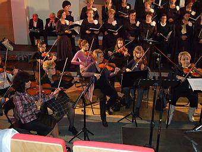
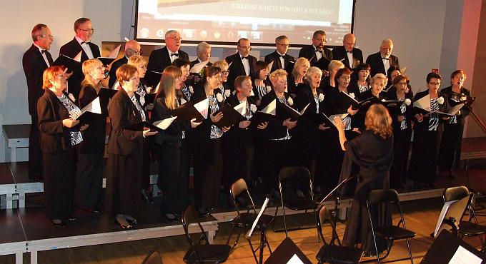

A tymczasem w Cameracie...
.
2014-10-24
Spotykamy się przed koncertem na wspólnej próbie z orkiestrą 
i solistką.
Po próbie chwila odpoczynku przed koncertem.
Uroczystość odbywa się w Kampusie Wielickim, a rozpoczynają ją wspólnie przewodniczący Rady Powiatu Wielickiego Adam Kociołek oraz starosta wielicki Jacek Juszkiewicz.
Na początku występują chóry ze swoimi dyrygentami i własnym repertuarem.

Następnie w jubileuszowym koncercie zaprezentowały się chóry Jana Pawła II w Strumianach, Camerata oraz Lutnia wspólnie z Wielicką Orkiestrą Kameralną pod dyrekcją Piotra Piwko
oraz solistki Izabeli Szoty.
W szerokim repertuarze występu znalazły się utwory religijne, górnicze, popularne piosenki, kompozycje pochodzącego z pobliskich Grodkowic Władysława Żeleńskiego, a także brawurowo wykonane przez Izabelę Szotę „śpiewane” życzenia jubileuszowe. Jeszcze podziękowania i kwiaty.


© Stowarzyszenie Muzyczne Chór Camerata Wieliczka
Projekt i wykonanie:  Prowadzenie strony: Małgorzata Wysocka-Cebula
Prowadzenie strony: Małgorzata Wysocka-Cebula